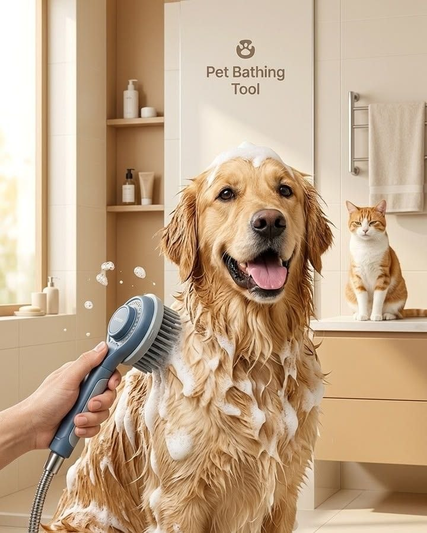

Balanced Nutrition
Choose food made for your pet's species, age, size, and activity level. Follow the portion guide and avoid sudden food changes.
Helpful everyday advice for feeding, grooming, exercise, safety, and building a healthy routine for dogs, cats, and fish.
Explore Care Tips
Consistent small habits make the biggest difference to your pet's comfort and long-term health.
Choose food made for your pet's species, age, size, and activity level. Follow the portion guide and avoid sudden food changes.
Keep clean drinking water available throughout the day. Wash food and water bowls regularly to prevent buildup.
Use walks, safe play, climbing, or interactive toys to support a healthy weight and reduce boredom.
Brush coats, check ears, trim nails carefully, and keep sleeping areas clean. Grooming also helps you notice unusual changes.
Store medicines, chemicals, wires, and unsafe foods out of reach. Give your pet a calm place to rest without disturbance.
Arrange routine veterinary visits and follow professional guidance for vaccination, parasite prevention, and dental care.


Refresh water, serve a measured meal, and check your pet's mood and energy.
Include exercise, play, enrichment, and a quiet place for proper rest.
Serve the final meal if required, tidy the care area, and spend calm time together.
Seek professional advice when you notice ongoing loss of appetite, repeated vomiting or diarrhea, difficulty breathing, sudden weakness, unusual swelling, injury, or a major change in normal behavior. This page provides general care information and does not replace veterinary diagnosis.
Browse our dog, cat, and fish food selection and choose a product that suits their routine.